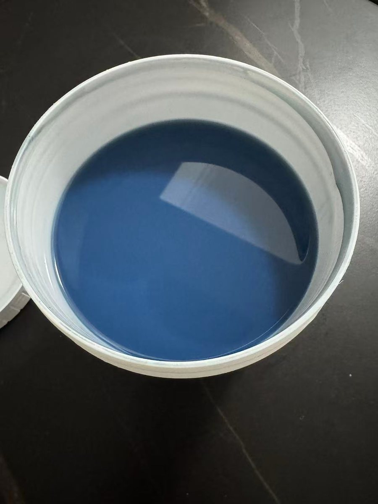
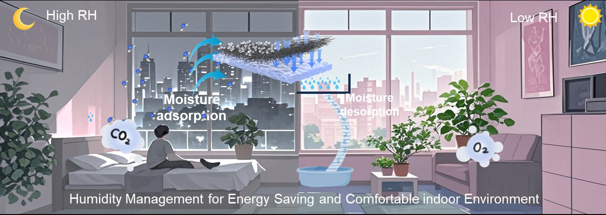
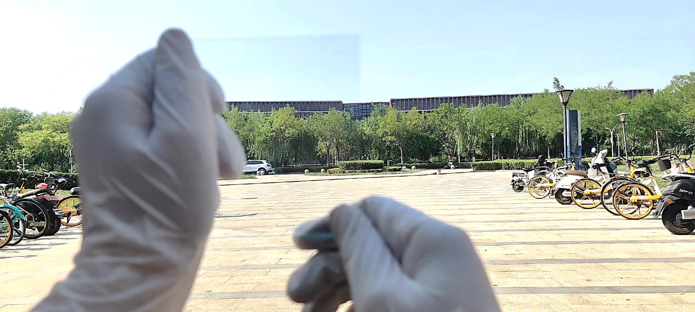
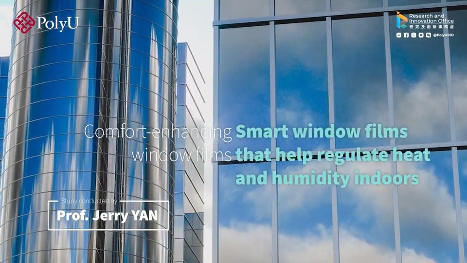

Main paneSolar-Selective Coating
A clear coating for existing glass. Daylight comes in, solar heat stays out.
- 78.4%visible light in
- 71.3%near-infrared blocked
- 7,500abrasion cycles
The Hong Kong Polytechnic University
Two thin-film retrofits that cut solar heat and indoor humidity. No new glazing, no power.

Why windows?

Main paneA clear coating for existing glass. Daylight comes in, solar heat stays out.
Absorbs indoor moisture, then releases it using the sun's heat. Runs without power.
MRLR version: turns translucent at night for privacy and shades sunlight by day.
Solar-Selective Coating
Dehumidifying Window Film



vs. commercial window film
Up to 6.5 °C cooler at the sun-exposed spot, side-by-side outdoor testvs. silica gel desiccant
21.6% vs 83.3% room humidity after 1 hour, same mass, from 90.7%vs. new low-E glazing
HKD 0.12 M vs 18 M upfront cost to treat a whole HKJC building
Retrofit study for an HKJC building in Hong Kong: coating the existing windows vs. replacing them with vacuum low-E glass.
Whole building, single glazing: coating costs HKD 119,845 for a 5.06% energy saving; replacement costs HKD 18,000,000 for 11.27%. For a Hong Kong glass curtain-wall building, the coating is modelled to cut air-conditioning energy by about 25%.

Watch
PolyU Research and Innovation Office video with Prof. Jerry Yan.
Watch on YouTubeDepartment of Building Environment and Energy Engineering, The Hong Kong Polytechnic University.
Ir Prof. YAN Jinyue Jerry Chair Professor
Dr LIU Junwei Research Assistant Professor
In the news, 2026
PolyU Croucher Foundation Ming Pao Ta Kung Pao Bastille Post
Published in
Advanced Energy Materials Advanced Science J. Mater. Chem. A Chem. Eng. J.